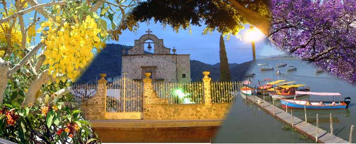

HISTORIA de AJIJIC -- LAGO DE CHAPALA, JALISCO MEXICO

La historia de Ajijic comienza mucho tiempo antes de la
conquista española, cuando tribus descendientes de los nahuatls se
establecieron en las orillas del Lago de Chapala. Se dice que el primer
indígena nahuatl surgió de cenizas en la Isla de Mezcala, y es por este
suceso que el Lago es uno de los 4 puntos cardinales en la mitología
nahuatl.
En la lengua Nahuatl, Axixic significa ¨Lugar donde brota
el agua¨ ó ¨Lugar donde salpica el agua¨.
Ajijic como asentamiento español, fue fundado en 1531 y
es una de las villas más antiguas de México. La conquista de esta área, en
ese entonces conocido como Mar Chapalteco, estuvo en manos del caballero
Alonso Dávalos, y al mismo tiempo la conversión de los nativos a la
Cristiandad por el padre Fray Martín de Jesús, quien aquí estableció el
segundo convento más antiguo en el occidente de la Nueva España, en honor a
San Francisco de Asís, el cual años más tarde cambió, dando al convento el
nombre de San Andrés de Axixic, quien es nuestro santo patrón hasta el día
de ahora.
Las calles empedradas, la parroquia, la capilla y ya
pocas residencias, datan a la influencia española, pero no fue hasta 1930 a
1940 cuando esta villa de pescadores se convierte en un imán para
extranjeros, siendo una de las primeras la Srita. Ayenara Zara Alexeyewa,
apodada cariñosamente ¨La Rusa¨, quien fue una famosa interprete del ballet
clásico ruso, ella hizo de Ajijic su residencia permanente, junto con otros
quien siguieron sus pasos. Porque dedicó su vida a Ajijic y la Ribera,
denominamos nuestro prestigioso restaurante "La Rusa" en su honor. |